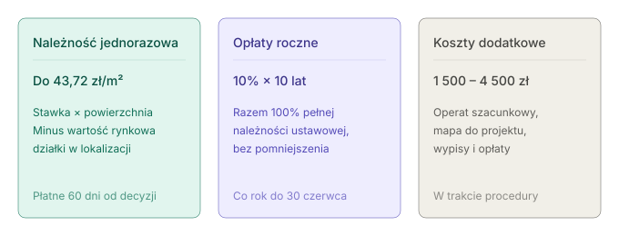
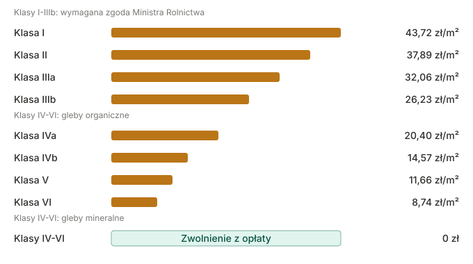
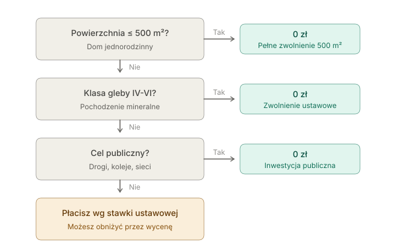

Ile kosztuje odrolnienie działki w 2026 roku - pełny przewodnik z cenami

Koszt odrolnienia działki w 2026 roku waha się od 0 zł (klasy V-VI gleby mineralnej oraz pierwsze 500 m² pod dom jednorodzinny) do 43,72 zł za każdy metr kwadratowy (klasa I). Dla działki budowlanej pod dom jednorodzinny w klasie IIIa-IIIb, koszt 10-letni (należność jednorazowa + opłaty roczne) mieści się w przedziale 15-50 tys. zł. Po pomniejszeniu o wartość rynkową gruntu kwota spada do zera w lokalizacjach o wysokiej wartości gruntu.
Wyliczenie dla danej działki: kalkulator odrolnienia.
Z czego składa się koszt odrolnienia działki
Koszt odrolnienia stanowi sumę trzech odrębnych pozycji, liczonych według różnych zasad.
1. Należność jednorazowa
Opłata ustawowa, naliczana dla każdej klasy gleby według wzoru:
Stawka za 1 ha × powierzchnia w ha
Stawkę określa art. 12 ust. 7 ustawy z 3 lutego 1995 r. o ochronie gruntów rolnych i leśnych (Dz.U.2024.82). Termin płatności: 60 dni od dnia ostateczności decyzji.
Należność pomniejsza się o wartość rynkową gruntu (art. 12 ust. 6 ustawy). Od kwoty ustawowej odejmuje się rynkową wartość działki w danej miejscowości. Gdy wartość rynkowa przewyższa należność, opłata wynosi 0 zł.
Dla działki klasy III pod Warszawą czy Krakowem, gdzie metr kwadratowy gruntu kosztuje 300-800 zł, należność jednorazowa po pomniejszeniu wynosi zwykle 0 zł.
2. Opłata roczna
Stanowi 10% należności jednorazowej, płatna przez 10 kolejnych lat do 30 czerwca każdego roku. Opłata roczna naliczana jest od pełnej należności ustawowej, nie pomniejszonej o wartość rynkową gruntu.
Wyzerowanie należności jednorazowej przez wysoką wartość rynkową nie zwalnia z opłat rocznych. Suma 10-letnia opłat rocznych równa się 100% pełnej należności ustawowej (10% × 10 lat).
3. Koszty dodatkowe
Pozycje proceduralne nieuwzględniane w stawkach ustawowych:
- Operat szacunkowy rzeczoznawcy majątkowego (przy wniosku o pomniejszenie należności o wartość rynkową): 800-2500 zł
- Wypis i wyrys z ewidencji gruntów: 50-150 zł
- Mapa do celów projektowych: 800-2000 zł
- Opłata skarbowa za decyzję: 10 zł
- Pełnomocnictwo: 17 zł
Łącznie koszty dodatkowe: 1500-4500 zł. Operat szacunkowy obniża należność jednorazową o pełną wartość rynkową gruntu - dla działek o wyższej wartości oszczędność sięga dziesiątek tysięcy złotych.

Pełna tabela stawek odrolnienia na 2026 rok
Stawki ustawowe za wyłączenie 1 hektara gruntu z produkcji rolnej, obowiązujące w 2026 roku:
| Klasa gleby | Stawka za 1 ha | Stawka za 1 m² | Wymaga zgody Ministra? |
|---|---|---|---|
| Klasa I | 437 175 zł | 43,72 zł | Tak |
| Klasa II | 378 885 zł | 37,89 zł | Tak |
| Klasa IIIa | 320 595 zł | 32,06 zł | Tak |
| Klasa IIIb | 262 305 zł | 26,23 zł | Tak |
| Klasa IVa (gleba organiczna) | 204 015 zł | 20,40 zł | Nie |
| Klasa IVb (gleba organiczna) | 145 725 zł | 14,57 zł | Nie |
| Klasa V (gleba organiczna) | 116 580 zł | 11,66 zł | Nie |
| Klasa VI (gleba organiczna) | 87 435 zł | 8,74 zł | Nie |
| Klasy IV-VI gleby mineralnej | 0 zł | 0 zł | Nie (zwolnienie ustawowe) |

Opłata dla klas IVa-VI obowiązuje wyłącznie dla gleb organicznych (torfowe, murszowe). Gleby mineralne tych klas są zwolnione w całości. Większość polskich gleb klas IV-VI to gleby mineralne.
Pochodzenie gleby (mineralna czy organiczna) jest oznaczone w Ewidencji Gruntów i Budynków (EGiB) obok klasy bonitacyjnej. Symbol „M”, „Mw”, „Tn” lub podobny przy konturze klasyfikacyjnym oznacza glebę organiczną. Brak takiego oznaczenia — gleba mineralna.
Realny koszt vs koszt ustawowy
Koszt ustawowy to wartość z tabeli powyżej. Koszt realny to kwota wpłacana na konto urzędu marszałkowskiego. Różnica wynika z trzech mechanizmów obniżenia.
Mechanizm 1: Zwolnienie 500 m² pod dom jednorodzinny
Art. 12a ustawy: pierwsze 500 m² pod budynek jednorodzinny jest zawsze zwolnione, niezależnie od klasy gleby. Dla działki 800 m² opłata obejmuje 300 m². Dla działki 500 m² lub mniejszej opłata wynosi 0 zł.
W zabudowie wielorodzinnej: 200 m² zwolnienia na każdy lokal. Budynek z 10 mieszkaniami = 2000 m² zwolnienia.
Mechanizm 2: Pomniejszenie o wartość rynkową gruntu
Art. 12 ust. 6: od należności jednorazowej odejmuje się wartość rynkową działki w danej miejscowości. Przykład:
- Działka 1000 m², klasa IIIa, dom jednorodzinny
- Powierzchnia opłaty (po zwolnieniu): 500 m²
- Należność ustawowa: 500 × 32,06 = 16 030 zł
- Wartość rynkowa działki (pod Warszawą, 400 zł/m²): 500 × 400 = 200 000 zł
- Należność po pomniejszeniu: max(0, 16 030 - 200 000) = 0 zł
Pozostaje opłata roczna przez 10 lat (10% × 16 030 zł × 10 lat = 16 030 zł łącznie). Opłata roczna nie podlega pomniejszeniu.
Pomniejszenie wymaga osobnego wniosku po faktycznym wyłączeniu gruntu z produkcji, wraz z operatem szacunkowym rzeczoznawcy majątkowego. Operat kosztuje 800-2500 zł. Dla działek o wartości powyżej 50 zł/m² operat zwraca się wielokrotnie w obniżonej należności.
Mechanizm 3: Status działki w mieście
Art. 10a ustawy: dla działek położonych w granicach administracyjnych miast nie obowiązuje wymóg zgody Ministra Rolnictwa (nawet dla klas I-III), ale opłata za samo wyłączenie nadal naliczana jest. Procedura jest szybsza, koszt — bez zmian. Wyjątek: przy działce objętej MPZP o przeznaczeniu budowlanym część kosztów planistycznych odpada.

Cztery scenariusze: typowe koszty odrolnienia
Cztery przypadki pokazujące wpływ klasy gleby, lokalizacji i przeznaczenia na realny koszt. Wszystkie kwoty obejmują 10-letni horyzont (należność + opłaty roczne).
Scenariusz 1: Działka pod Warszawą, klasa IIIa, 1000 m², dom jednorodzinny
- Wartość rynkowa: 400 zł/m²
- Powierzchnia opłaty: 500 m² (zwolnienie 500 m²)
- Należność ustawowa: 16 030 zł
- Wartość rynkowa 500 m²: 200 000 zł → należność po pomniejszeniu: 0 zł
- Opłata roczna 10-letnia: 1603 × 10 = 16 030 zł
- Operat szacunkowy: 1500 zł
- Realny koszt 10-letni: ~17 530 zł
Bez wniosku o pomniejszenie: 16 030 + 16 030 = 32 060 zł. Operat za 1500 zł oszczędza 14 500 zł.
Scenariusz 2: Działka na Mazurach, klasa V mineralna, 1500 m², dom jednorodzinny
- Klasa V mineralna → zwolnienie ustawowe pełne
- Realny koszt 10-letni: 0 zł
Pozostają wyłącznie koszty proceduralne: wypis z EGiB, mapa, opłata skarbowa — łącznie ok. 1000-2000 zł.
Scenariusz 3: Działka pod Krakowem, klasa II, 2000 m², dom jednorodzinny
- Wartość rynkowa: 600 zł/m²
- Powierzchnia opłaty: 1500 m² (po zwolnieniu 500 m²)
- Należność ustawowa: 1500 × 37,89 = 56 835 zł
- Wartość rynkowa 1500 m²: 900 000 zł → należność po pomniejszeniu: 0 zł
- Opłata roczna 10-letnia: 5683 × 10 = 56 835 zł
- Operat: 2000 zł
- Realny koszt 10-letni: ~58 835 zł
Bez pomniejszenia: 56 835 + 56 835 = 113 670 zł. Pomniejszenie obniża koszt o 56 835 zł.
Scenariusz 4: Działka na Podkarpaciu, klasa IIIa, 5000 m², zabudowa zagrodowa
- Wartość rynkowa: 25 zł/m²
- Powierzchnia opłaty: 4500 m² (po zwolnieniu 500 m²)
- Należność ustawowa: 4500 × 32,06 = 144 270 zł
- Wartość rynkowa 4500 m²: 112 500 zł → należność po pomniejszeniu: 31 770 zł
- Opłata roczna 10-letnia: 14 427 × 10 = 144 270 zł
- Operat: 2500 zł
- Realny koszt 10-letni: ~178 540 zł
Wysokie klasy + niska wartość rynkowa + duża powierzchnia generują najwyższe koszty odrolnienia. Alternatywy ograniczające opłatę: zabudowa zagrodowa, podział działki, etap planistyczny przez WZ zamiast MPZP.
Kalkulator: wyliczenie kosztu
Wyliczenie kosztu dla danej działki: kalkulator odrolnienia. Wymagane dane wejściowe: powierzchnia, klasa gleby, rodzaj zabudowy.
Kalkulator uwzględnia:
- Stawki ustawowe dla wszystkich klas (I-VI)
- Zwolnienie 500 m² dla zabudowy jednorodzinnej
- Zwolnienie 200 m² × liczba lokali dla zabudowy wielorodzinnej
- Należność jednorazową
- Opłatę roczną × 10 lat
Czego kalkulator nie uwzględnia:
- Wartości rynkowej gruntu (znana dopiero po wycenie rzeczoznawcy)
- Kosztów dokumentacji (operat, mapa, wypisy)
Klasy gleb a koszt - trzy grupy cenowe
Klas bonitacyjnych jest 6 (I-VI). Pod kątem kosztów odrolnienia działki pod dom jednorodzinny mieszczą się w trzech grupach:
Klasy I-IIIa: 32-44 zł/m²
Gleby najbardziej chronione. Wymagają dodatkowo zgody Ministra Rolnictwa, co wydłuża procedurę o 3-6 miesięcy. Obejmują tereny rolnicze wokół dużych miast. Odsetek decyzji odmownych: 15-25%.
Dla działek klasy I-III w granicach administracyjnych miast zgoda ministra nie jest wymagana (art. 10a). Procedura jest wtedy szybsza.
Klasa IIIb: 26 zł/m²
Opłaty wysokie, ale procedura prostsza niż dla klas I-IIIa — bez zgody Ministra Rolnictwa. Klasa obejmująca dużą część działek wiejskich.
Klasy IV-VI (zwłaszcza mineralne): 0-20 zł/m²
Większość działek rekreacyjnych i pod dom jednorodzinny poza granicami miast. Klasy V-VI gleb mineralnych — ok. 60-70% areału tej grupy — są zwolnione z opłaty w całości.
Stawki dla każdej klasy i wyliczenia dla różnych metraży: kalkulator.
Koszt odrolnienia według metrażu
Przedziały kosztów 10-letnich (bez pomniejszenia o wartość rynkową) dla najczęstszych metraży:
| Powierzchnia | Klasa V-VI mineralna | Klasa IIIb | Klasa IIIa | Klasa I |
|---|---|---|---|---|
| 500 m² (dom jednorodzinny) | 0 zł | 0 zł | 0 zł | 0 zł |
| 700 m² (dom jednorodzinny) | 0 zł | 10 492 zł | 12 824 zł | 17 488 zł |
| 1 000 m² (10 arów) | 0 zł | 26 230 zł | 32 060 zł | 43 720 zł |
| 1 500 m² (15 arów) | 0 zł | 52 460 zł | 64 120 zł | 87 440 zł |
| 2 000 m² (20 arów) | 0 zł | 78 690 zł | 96 180 zł | 131 160 zł |
| 3 000 m² (30 arów) | 0 zł | 131 150 zł | 160 300 zł | 218 600 zł |
| 5 000 m² (50 arów) | 0 zł | 236 070 zł | 288 540 zł | 393 480 zł |
| 1 ha (10 000 m²) | 0 zł | 498 365 zł | 609 130 zł | 830 670 zł |
Uwagi do tabeli:
- Każda kwota uwzględnia zwolnienie 500 m² dla zabudowy jednorodzinnej
- Każda kwota to suma 10-letnia (należność jednorazowa + 10 lat opłat rocznych); w pierwszym roku płatność wynosi mniej niż połowę
- Po pomniejszeniu o wartość rynkową gruntu kwoty spadają o 50-100%
Kiedy odrolnienie jest darmowe: 6 sytuacji zwolnień

Lista zwolnień ustawowych:
1. Dom jednorodzinny do 500 m² (art. 12a)
Pierwsze 500 m² pod budynek mieszkalny jednorodzinny jest zawsze zwolnione, niezależnie od klasy gleby.
2. Zabudowa wielorodzinna: 200 m² na każdy lokal (art. 12a)
Budynek z 10 mieszkaniami = 2000 m² zwolnienia.
3. Gleby mineralne klas IV-VI (art. 12 ust. 7)
Pełne zwolnienie ustawowe. Większość polskich gleb klas IV-VI to gleby mineralne.
4. Działki w granicach administracyjnych miast (art. 10a)
Bez wymogu zgody Ministra Rolnictwa nawet dla klas I-III. Opłata za samo wyłączenie nadal obowiązuje — zwolnienie dotyczy procedury, nie opłaty.
5. Inwestycje celu publicznego
Drogi publiczne, koleje zarządzane przez PKP PLK, sieci przesyłowe energii i gazu, infrastruktura wodociągowa i kanalizacyjna.
6. Zabudowa zagrodowa w gospodarstwie rolnym (art. 12b)
Do 30% powierzchni gruntu rolnego pod zabudową zagrodową w gospodarstwie, nie więcej niż 500 m², pod warunkiem dalszego prowadzenia gospodarstwa.
Kalkulator automatycznie uwzględnia zwolnienia 1 i 2. Pozostałe omawia artykuł kiedy odrolnienie jest bezpłatne.
Procedura krok po kroku: czas trwania i wymagane dokumenty
Procedura odrolnienia działki trwa 2-3 miesiące od złożenia wniosku do otrzymania decyzji. Przy wymaganej zgodzie Ministra Rolnictwa (klasy I-III poza miastami) procedura wydłuża się o 3-6 miesięcy.
Etap 1: Sprawdzenie statusu działki (1-2 tygodnie)
Na tym etapie ustala się:
- Klasę bonitacyjną gleby (wypis z EGiB)
- Pochodzenie gleby: mineralna czy organiczna (w EGiB)
- Status działki w MPZP i przeznaczenie
- Konieczność uzyskania warunków zabudowy (WZ)
Koszt etapu: 50-150 zł (wypisy).
Etap 2: Przygotowanie dokumentów (2-4 tygodnie)
Niezbędne dokumenty do wniosku o wyłączenie z produkcji rolnej:
- Wniosek (formularz dostępny w starostwie)
- Wypis i wyrys z ewidencji gruntów
- Mapa do celów projektowych w skali 1:500 lub 1:1000
- Decyzja o warunkach zabudowy (WZ) lub wypis z MPZP
- Dokument prawa do działki (akt notarialny, odpis z księgi wieczystej)
- Projekt zagospodarowania działki (jeśli wymagany)
Koszt etapu: 800-2500 zł (głównie mapa do celów projektowych).
Etap 3: Złożenie wniosku i postępowanie (4-8 tygodni)
Wniosek składany jest do starosty powiatowego właściwego dla położenia działki. Postępowanie trwa do 30 dni, w sprawach skomplikowanych do 2 miesięcy.
Czynności starostwa w postępowaniu:
- Weryfikacja dokumentów
- Konsultacja z Lasami Państwowymi (przy działkach graniczących z lasem)
- Wydanie decyzji o wyłączeniu z produkcji rolnej
Koszt etapu: 10 zł (opłata skarbowa) lub 0 zł dla osób fizycznych w niektórych przypadkach.
Etap 4: Faktyczne wyłączenie i wniosek o pomniejszenie
Termin płatności należności wynosi 60 dni od dnia ostateczności decyzji. Obowiązek płatności powstaje od dnia faktycznego wyłączenia gruntu z produkcji (rozpoczęcia inwestycji budowlanej). Opóźnienie budowy o 2 lata oznacza analogiczne opóźnienie płatności.
Po faktycznym wyłączeniu możliwe jest złożenie osobnego wniosku o pomniejszenie należności o wartość rynkową gruntu z operatem szacunkowym.
Koszt etapu: 800-2500 zł (operat szacunkowy).
Odrolnienie vs przekształcenie: dwa różne procesy
W mowie potocznej pojęcia używane są zamiennie, ale prawnie to dwa różne procesy:
Przekształcenie działki rolnej na budowlaną to etap planistyczny. Zmiana przeznaczenia gruntu w miejscowym planie zagospodarowania przestrzennego (MPZP) lub uzyskanie decyzji o warunkach zabudowy (WZ). Decyzję wydaje gmina. Koszty: opłata za WZ (100-600 zł), ewentualne opracowania urbanistyczne.
Odrolnienie (wyłączenie z produkcji rolnej) to etap administracyjny. Wyłączenie konkretnego gruntu z użytkowania rolnego. Decyzję wydaje starosta. Koszty: stawki ustawowe + opłaty roczne (omówione w artykule).
Budowa domu na działce rolnej w większości przypadków wymaga przejścia przez oba procesy: najpierw przekształcenie, potem odrolnienie. Wyjątki:
- Działka objęta MPZP z przeznaczeniem budowlanym → przekształcenie odpada, zostaje odrolnienie
- Działka w granicach miasta → odrolnienie bez zgody ministra (procedura krótsza)
- Klasa V-VI gleby mineralnej → przekształcenie nadal wymagane, ale odrolnienie zwolnione
Kalkulator odrolnienia oblicza koszt etapu administracyjnego (wyłączenia z produkcji rolnej). Koszty etapu planistycznego są niższe i zależą od gminy.
Najczęstsze błędy proceduralne
Błąd 1: Pominięcie wniosku o pomniejszenie o wartość rynkową
Większość inwestorów płaci pełną należność ustawową, nie korzystając z art. 12 ust. 6. Operat za 1500 zł obniża należność o 15-50 tys. zł. Próg opłacalności operatu: wartość działki powyżej 50 zł/m².
Błąd 2: Odrolnienie całej działki zamiast wybranej części
Wyłączeniu podlega tylko część działki potrzebna pod budowę. Reszta zachowuje status gruntu rolnego z niższym podatkiem od nieruchomości. Powierzchnia pod sam budynek z otoczeniem (500-1000 m²) wystarcza do skorzystania ze zwolnienia 500 m².
Błąd 3: Pomylenie gleby organicznej z mineralną
Klasa V z założenia jest zwolniona, dla gleb organicznych opłata wynosi pełną stawkę 11,66 zł/m². Sprawdzenie pochodzenia gleby w EGiB jest niezbędne przed zakupem działki rolnej klasy IV-VI.
Błąd 4: Wybranie WZ zamiast MPZP, gdy MPZP istnieje
Decyzja o warunkach zabudowy obowiązuje 5 lat, MPZP — bezterminowo. Przy gminie posiadającej MPZP i możliwości uwzględnienia działki w nowelizacji planu, opcja MPZP jest długoterminowo korzystniejsza. Reforma planistyczna z 2023 r., wchodząca w życie w 2026 r., zmienia te zasady — szczegóły w artykule o reformie planistycznej.
Co zmienia się w 2026 roku
Stawki ustawowe za wyłączenie gruntu z produkcji rolnej (art. 12 ust. 7) obowiązują w niezmienionej formie od 2022 roku.
Zmianom podlega otoczenie planistyczne:
- Wchodzi w życie plan ogólny gminy zastępujący dotychczasowe studium uwarunkowań i kierunków zagospodarowania przestrzennego
- Decyzje o warunkach zabudowy (WZ) wydawane od 1 stycznia 2026 r. muszą być zgodne z planem ogólnym
- Stare decyzje WZ wydane przed 2026 r. zachowują ważność przez 5 lat; po tym terminie procedura wymaga ponownego uzyskania WZ na nowych zasadach
Sama procedura odrolnienia (po stronie starosty) nie zmienia się. Zmianom podlega etap planistyczny (przekształcenie), który dla części działek staje się trudniejszy. Przy planowanej budowie na działce rolnej w perspektywie 2-3 lat, uzyskanie decyzji o warunkach zabudowy przed wejściem nowych zasad ogranicza ryzyko proceduralne.
Pełne omówienie zmian: Zmiany w prawie budowlanym 2026 — reforma planistyczna.
Podsumowanie
Trzy zasady kosztowe:
1. Stawka ustawowa nie jest kosztem realnym. Po pomniejszeniu o wartość rynkową gruntu realny koszt jest niższy o 50-100%.
2. Zwolnienie 500 m² eliminuje opłatę dla większości inwestycji jednorodzinnych. Powierzchnia 500 m² pod zabudowę jednorodzinną oznacza opłatę 0 zł niezależnie od klasy gleby.
3. Klasa V-VI gleby mineralnej daje pełne zwolnienie. Weryfikacja klasy i pochodzenia gleby przed zakupem działki rozróżnia opłatę 0 zł od kilkudziesięciu tysięcy zł.
Wyliczenie dla konkretnej działki: kalkulator odrolnienia. Wynik obejmuje należność jednorazową, opłaty roczne i łączny koszt 10-letni.
FAQ — Najczęściej zadawane pytania
Ile kosztuje odrolnienie 1000 m² w 2026 roku?
Zależy od klasy gleby. Dla działki pod dom jednorodzinny (pierwsze 500 m² zwolnione): klasa V-VI mineralna — 0 zł, klasa IIIb — 26 230 zł, klasa IIIa — 32 060 zł, klasa I — 43 720 zł. Kwoty ustawowe za 10 lat; po pomniejszeniu o wartość rynkową gruntu realny koszt jest niższy. Wyliczenie w kalkulatorze.
Czy odrolnienie działki 500 m² jest darmowe?
Tak, dla budownictwa jednorodzinnego. Pierwsze 500 m² jest zawsze zwolnione (art. 12a ustawy), niezależnie od klasy gleby. Działka o powierzchni dokładnie 500 m² lub mniejszej pod budowę domu jednorodzinnego: koszt odrolnienia 0 zł.
Czy klasa V wymaga opłaty za odrolnienie?
Tylko dla gleb organicznych (torfowe, murszowe). Gleby mineralne klasy V są zwolnione w całości. Większość polskich gleb klasy V to gleby mineralne — oznaczenie sprawdzane w EGiB. Brak symbolu „M”, „Mw” lub „Tn” przy klasie oznacza glebę mineralną i darmowe odrolnienie.
Ile trwa odrolnienie działki?
2-3 miesiące dla sprawy bez zgody Ministra Rolnictwa (klasy IV-VI lub działka w mieście). Dla klas I-III poza granicami miast dodatkowo 3-6 miesięcy na zgodę Ministra. Razem 5-9 miesięcy w sprawach złożonych.
Czy można odrolnić tylko część działki?
Tak. Wyłączeniu podlega tylko powierzchnia potrzebna pod budynek (500-1000 m²), reszta pozostaje gruntem rolnym z niższym podatkiem od nieruchomości.
Czy odrolnienie zmienia podatek od nieruchomości?
Tak. Po wyłączeniu z produkcji rolnej grunt zmienia status na „grunty pozostałe” lub „grunty pod zabudową” i stawka podatku rośnie. Konkretne stawki ustala rada gminy.
Czy można zrezygnować z odrolnienia po wydaniu decyzji?
Tak, w ciągu 2 lat od dnia wydania decyzji. Zwrot wpłaconej należności następuje proporcjonalnie do powierzchni, która faktycznie nie została wyłączona z produkcji.
Co jeśli decyzja o odrolnieniu jest wydana, ale budowa nie rozpoczyna się?
Obowiązek płatności należności i opłat rocznych powstaje od dnia faktycznego wyłączenia gruntu z produkcji, czyli rozpoczęcia inwestycji. Brak rozpoczęcia budowy = brak naliczenia opłat. Po 2 latach możliwa rezygnacja z decyzji bez konsekwencji finansowych.
Czy operat szacunkowy się opłaca?
Dla działek o wartości powyżej 50 zł/m² operat zwraca się wielokrotnie. Koszt operatu: 800-2500 zł. Obniżenie należności jednorazowej: pełna wartość rynkowa gruntu. Dla działek w okolicach miast oszczędność wynosi 15-50 tys. zł.
Gdzie sprawdzić klasę gleby działki?
W Ewidencji Gruntów i Budynków (EGiB). Wypis dostępny w starostwie powiatowym właściwym dla działki (50-100 zł) lub online przez geoportal.gov.pl (bezpłatnie, ale dostęp do szczegółowych danych może wymagać konta). Klasa zapisana jest jako symbol typu „RIIIa”, „RIVb” — pierwsza litera oznacza rodzaj użytku (R = rola), kolejne — klasę bonitacyjną.
Artykuł oparty na ustawie z dnia 3 lutego 1995 r. o ochronie gruntów rolnych i leśnych (Dz.U.2024.82), art. 12 ust. 6-7, art. 12a, art. 12b oraz aktualnych interpretacjach RDLP i orzecznictwie sądów administracyjnych. Stawki obowiązują w 2026 roku.
Źródła
Ustawa z dnia 3 lutego 1995 r. o ochronie gruntów rolnych i leśnych (ISAP)